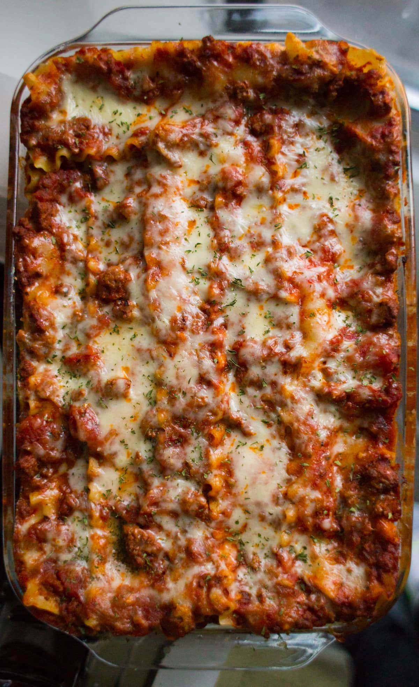

Lasagna Recipe

Lasagna is essentially a layered Italian casserole made up of three parts:
meat sauce, cheese mixture, and pasta sheets.
Here is the process of how to make and assemble your lasagna.
For full recipe details and ingredient measurements, see recipe down below.
Recipe
- Preheat the oven to 220c / 420f.
- Heat the oil in a frying pan or large saucepan. Add the onion and fry for 2-3 minutes before adding the crushed garlic. Fry for another minute and then add the minced beef.
- At this point I turn the heat up high to brown the mince as quickly as possible. Stir regularly to ensure it doesn’t stick or burn.
- Once the meat has browned add the chopped tomatoes and crumble in the stock cube. Add the oregano and frozen vegetables and finally add the water (you can add more water if it seems too dry).
- Stir until everything is well combined and continue to cook on high for approximately 7 minutes. Once the mince mixture has cooked remove from the heat and start to assemble your lasagne.
- I used a 8in x 8in dish which nicely fits two lasagne sheets side by side but you can use any dish you wish.
- Assemble the lasagne by alternating layers of the minced beef mixture and the lasagne sheets, finishing with a lasagne sheet layer on top. Spoon on the creme fraiche and spread it over the top of the lasagne.
- Finally add the grated cheese and put the lasagne in the oven.
- Reduce the oven temperature to 200c / 400f and bake for 15 minutes. You can test to make sure the lasagne sheets have cooked by sticking in a sharp knife.
- Serve immediately with a green salad or mixed vegetables.
Ingredients
- 9 lasagna noodles
- 1-1/4 pounds bulk Italian sausage
- 3/4 pound ground beef
- 1 medium onion, diced
- 3 garlic cloves, minced
- 2 cans (one 28 ounces, one 15 ounces) crushed tomatoes
- 2 cans (6 ounces each) tomato paste
- 2/3 cup water
- 2 to 3 tablespoons sugar
- 3 tablespoons plus 1/4 cup minced fresh parsley, divided
- 2 teaspoons dried basil
- 3/4 teaspoon fennel seed
- 3/4 teaspoon salt, divided
- 1/4 teaspoon coarsely ground pepper
- 1 large egg, lightly beaten
- 1 carton (15 ounces) ricotta cheese
- 4 cups shredded part-skim mozzarella cheese
- 3/4 cup grated Parmesan cheese